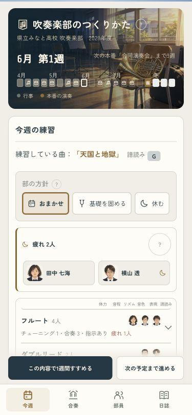
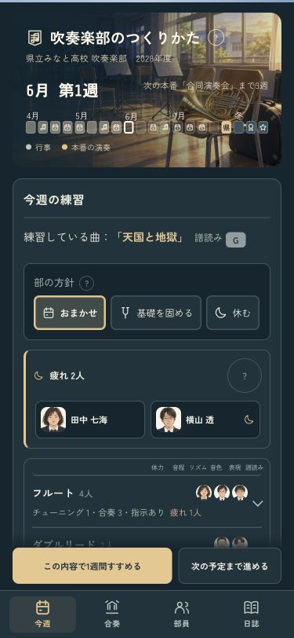
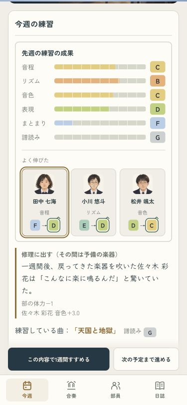
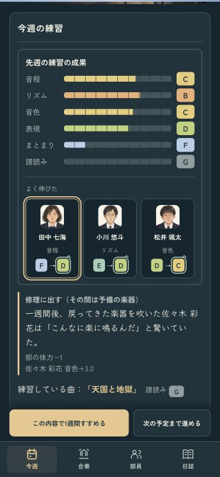
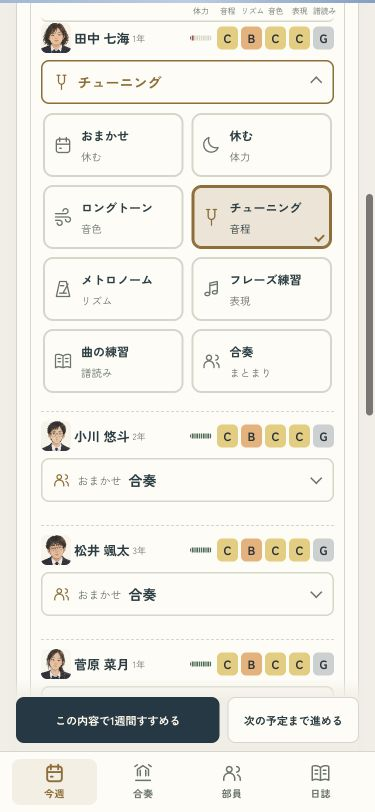
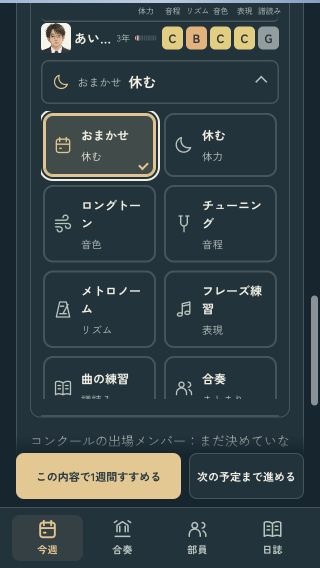

毎週、顔を見て育てる
疲れた子の顔から、その子の練習へ。よく伸びた子も顔とランクで見せ、次の練習を選べるようにしました。
疲れた部員の練習を選ぶ · 1週間進めて成長を見る · 確認記録
顔を押すと、その子の練習へ・ライト
同じ画面・ダーク
よく伸びた子とランク・ライト
同じ成長・ダーク
本人の練習・小さい画面
疲れている子は「休む」が先頭側に
320px・長い名前・控え
確認ページは本物のセーブと設定を変更しません。iPhoneへのインストールは成功。端末ロックのため実機の表示と音は未確認です。